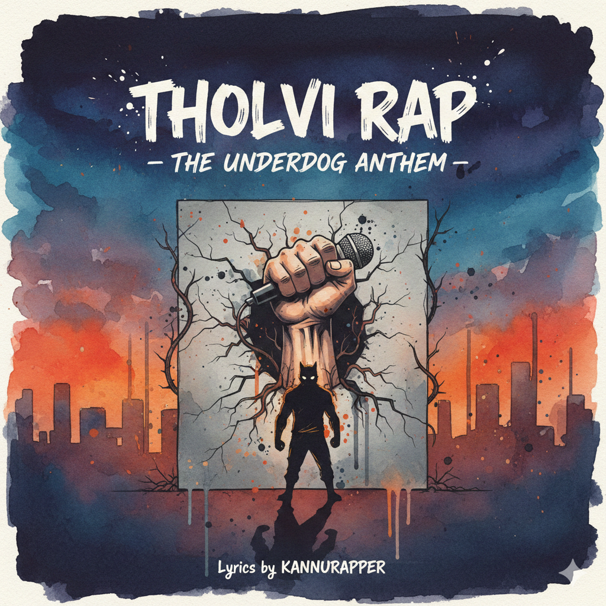
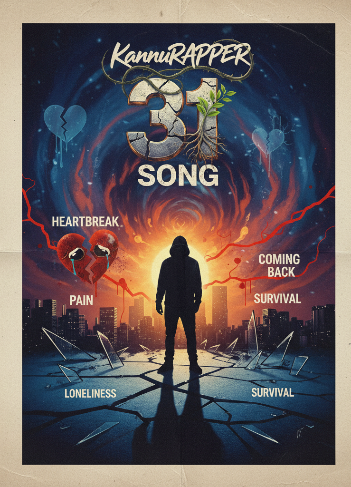
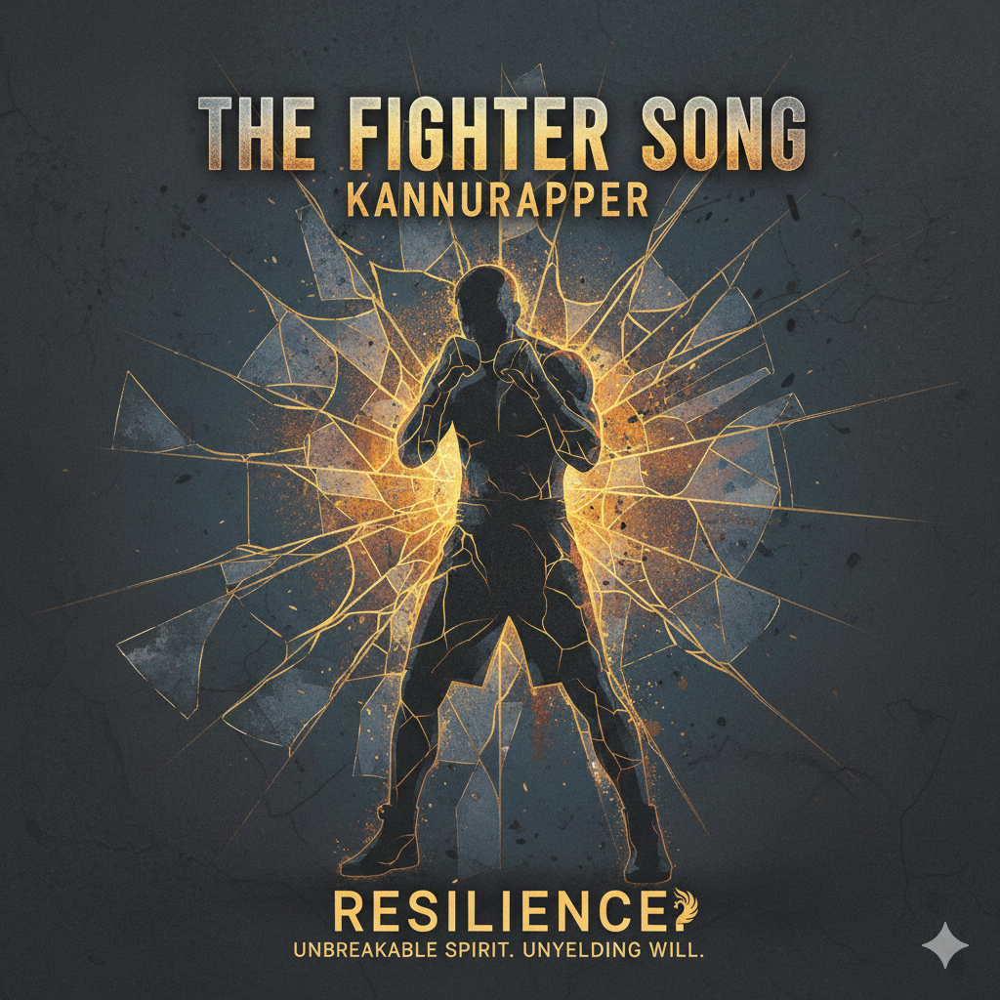
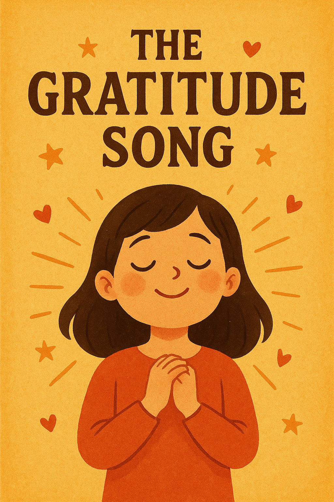
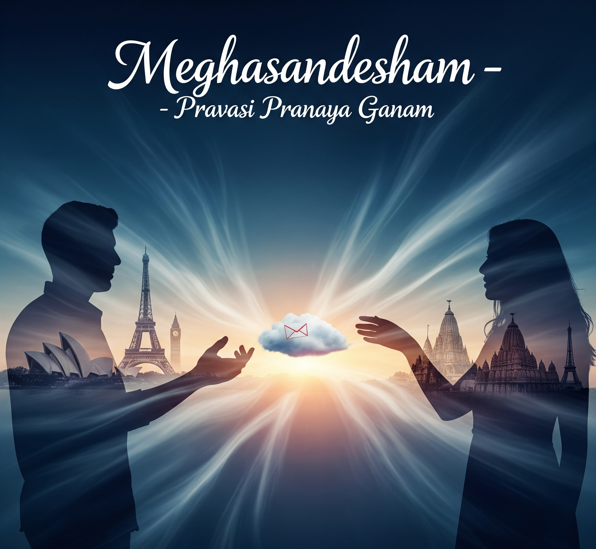
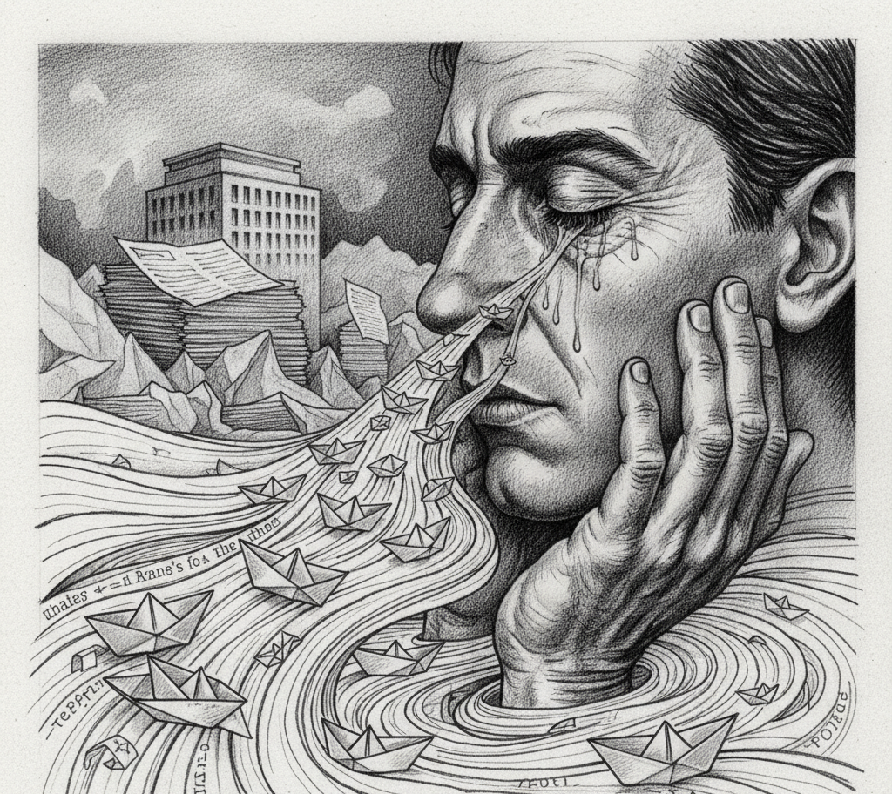

AVASTHA (■■■■■)
Explores the state of modern existence through the lens of a Kerala middle-class boy navigating expatriation. The track delivers social commentary on rapid modern life, hypocrisy, and the specific loneliness of foreign survival. Ends not with resolution — but with clarity.
Listen on YouTube
Introvert's Internal Song
The root system beneath all other tracks. Traces the full arc of an introverted mind from childhood to adulthood — mapping social expectations as cage architecture, and arriving at the conscious decision to stop apologising for how one is built.
Listen on YouTube
THOLVI RAP (■■■■■)
Descends into the actual texture of failure — not the triumphant narrative of quick recovery, but the specific, humiliating, quiet moments of collapse. Argues that defeat is not the enemy of resilience but the material from which it is constructed.
Listen on YouTube
31 Song
Captures the exact emotional coordinates of a life pivot at age 31. Old heartbreaks outgrown — not healed. Melancholic electronic production gives way to something harder and more certain. Not a rebirth. A precise recalibration.
Listen on YouTube
The Fighter Song (Manhood)
Strips away the mythology of masculine hardness to expose what strength actually requires: the courage to tend to old wounds before they become permanent damage. Redefines the fighter as one who chooses, repeatedly, to rebuild.
Listen on YouTube
Gratitude Song
The exhale in a body of work built on survival. Honours a protective mother and early mentors with precision — not sentimentality. Acknowledges challenges as the gifts they eventually became. Not the loudest track. Possibly the most important.
Listen on YouTube
Meghasandesham
Reinvents the classical Kerala messenger-cloud motif for the modern long-distance relationship — time zones instead of monsoons. Holds hope and structural anxiety in tension without resolving either. A message sent with full knowledge the receiver is out of reach.
Listen on YouTube
Karayam (■■■■■)
A direct, clinical dismantling of toxic masculinity's central prohibition: men cannot cry. Frames emotional expression as psychological necessity, not weakness. The urgency of someone who has watched the alternative unfold.
Listen on YouTubeShare Song
Built on a single irreducible premise: the meaning of life is to find your gift; the purpose is to give it away. Interrogates the act of withholding — art, pain, wisdom — as the quiet dismantling of one's own legacy.
Listen on YouTubeKodum Cringe Koottupaattu
The most tender piece in the vault beneath a self-deprecating title. Describes love through the inventory of shared smallness — cold cloths, split lemon candies, checked ginger coffee.
Thantha Vibe Song (■■■■ ■■■■)
An unflinching, candid portrait of modern youth culture — screen dependency, disrupted sleep, quiet self-sabotage. Not a lecture, not condemnation — an invitation to pause and reflect on what truly gives life meaning and purpose.
Listen on YouTubeForgiveness & Letting Go
Twin concept tracks forming the emotional terminus of the vault. Forgiveness Song: A relentless, three-wave release — forgiving those who wronged you, the traps they laid, and finally yourself — arriving at the only truth that makes forgiveness worth it: you are not doing it for them. You are doing it so the wound can stop being a wound, so you can become the medicine, so the desert heat of everything you have been carrying finally, mercifully, melts.
Let Go: Let Go is an act of radical excavation — not a gentle release but a deliberate, line-by-line inventory of every wound, every betrayal, every poisoned memory you have been gripping like a weapon against yourself. The song understands that we hold on not out of love for the pain, but out of the illusion that holding it keeps us safe — and it dismantles that illusion with one unsparing truth: if you hold on tight, you’ll be wounded more. Let go to heal the wounds.